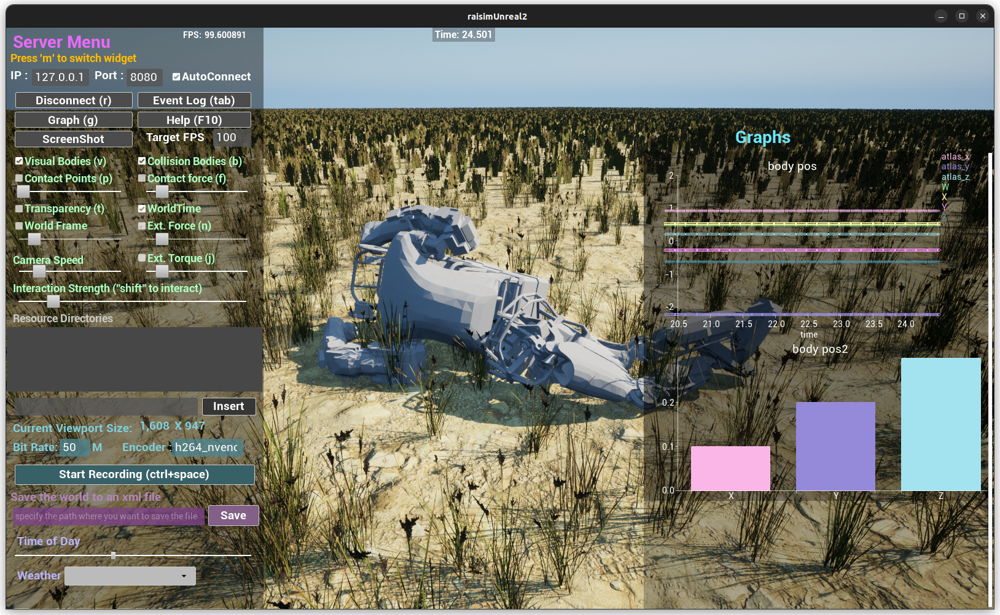

Map Example: Atlas Charts
Overview
Spawns Atlas on a map and demonstrates RaisimServer charting with time-series plots and bar charts. Use this to see how to publish telemetry to the visualizer.
Screenshot

Binary
CMake target and executable name: map_atlas_charts.
Run
Build and run from your build directory:
cmake --build . --target map_atlas_charts
./map_atlas_charts
On Windows, run map_atlas_charts.exe instead.
This example uses RaisimServer. Start a visualizer client (RaisimUnity, RaisimUnreal, or the rayrai TCP viewer) and connect to port 8080.
Details
Spawns Atlas robots and initializes the base pose with zero joint torques.
Applies external force/torque each frame to perturb the robot.
Demonstrates time-series and bar chart overlays (Unreal visualization).
Source
// This file is part of RaiSim. You must obtain a valid license from RaiSim Tech
// Inc. prior to usage.
#include "raisim/RaisimServer.hpp"
#include "raisim/World.hpp"
#include "raisim_unreal_map_hint.hpp"
int main(int argc, char* argv[]) {
auto binaryPath = raisim::Path::setFromArgv(argv[0]);
raisim::World::setActivationKey(binaryPath.getDirectory() + "\\rsc\\activation.raisim");
raisim_examples::printRaisimUnrealMapHint("dune");
/// create raisim world
raisim::World world;
world.setTimeStep(0.001);
world.setERP(0,0);
/// create objects
auto ground = world.addGround();
ground->setAppearance("hidden"); // this works only in raisimUnreal
std::vector<raisim::ArticulatedSystem*> atlas;
const size_t N = 1;
for (size_t i = 0; i < N; i++) {
for (size_t j = 0; j < N; j++) {
atlas.push_back(world.addArticulatedSystem(
binaryPath.getDirectory() + "\\rsc\\atlas\\robot.urdf"));
atlas.back()->setGeneralizedCoordinate(
{double(2 * i), double(j), 2.0, 1.0, 0.0, 0.0, 0.0, 0.0, 0.0,
0.0, 0.0, 0.0, 0.0, 0.0, 0.0, 0.0, 0.0, 0.0,
0.0, 0.0, 0.0, 0.0, 0.0, 0.0, 0.0, 0.0, 0.0,
0.0, 0.0, 0.0, 0.0, 0.0, 0.0, 0.0, 0.0, 0.0});
atlas.back()->setGeneralizedForce(Eigen::VectorXd::Zero(atlas.back()->getDOF()));
atlas.back()->setName("atlas" + std::to_string(j + i * N));
}
}
/// launch raisim server
raisim::RaisimServer server(&world);
server.setMap("dune");
/// use raisimUnreal to visualize the charts
auto timeSeries = server.addTimeSeriesGraph("body pos", {"atlas_x", "atlas_y", "atlas_z", "w", "x", "y", "z"}, "time", "pos");
auto barChart = server.addBarChart("body pos2", {"x", "y", "z"});
barChart->setData({0.1f, 0.2f, 0.3f});
server.launchServer();
int count = 0;
while (1) {
RS_TIMED_LOOP(int(world.getTimeStep()*1e6))
atlas[0]->setExternalForce(0, {300,-300,30});
atlas[0]->setExternalTorque(0, {0,40,0});
raisim::VecDyn vec(7);
if (count++%20==0) {
vec[0] = atlas[0]->getGeneralizedCoordinate()[0];
vec[1] = atlas[0]->getGeneralizedCoordinate()[1];
vec[2] = atlas[0]->getGeneralizedCoordinate()[2];
vec[3] = atlas[0]->getGeneralizedCoordinate()[3];
vec[4] = atlas[0]->getGeneralizedCoordinate()[4];
vec[5] = atlas[0]->getGeneralizedCoordinate()[5];
vec[6] = atlas[0]->getGeneralizedCoordinate()[6];
timeSeries->addDataPoints(world.getWorldTime(), vec);
}
server.integrateWorldThreadSafe();
}
server.killServer();
}